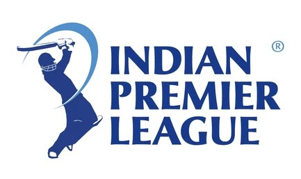

The Indian Premier League (IPL) 2026, currently in its 19th season, kicked off on March 28 with a high-stakes opener between the defending champions, Royal Challengers Bengaluru, and Sunrisers Hyderabad. The tournament is being held across 74 matches and is scheduled to conclude with the grand final on May 31, 2026. This season is particularly unique as the Board of Control for Cricket in India (BCCI) released the schedule in two phases to accommodate the assembly elections occurring across several states. Today, April 12, features a double-header with Lucknow Super Giants facing the Gujarat Titans in the afternoon, followed by a marquee clash between Mumbai Indians and Royal Challengers Bengaluru at the Wankhede Stadium. With major player trades—like Sanju Samson moving to Chennai Super Kings and Ravindra Jadeja joining Rajasthan Royals—the competition is at an all-time high as teams battle for a spot in the playoffs.
The Indian Premier League (IPL) was established by the BCCI in 2007, with its inaugural season taking place in 2008. It revolutionized the game by blending world-class cricket with high-energy entertainment, starting with a historic century by Brendon McCullum in the very first match. Over the years, the league has grown from its original eight teams to a ten-team format, seeing the rise of legendary dynasties like the Mumbai Indians and Chennai Super Kings. From its humble beginnings to becoming the second most valuable sports league in the world by 2026, the IPL has consistently introduced innovations like the Decision Review System (DRS), the Impact Player rule, and the latest Powerplay Sub. Today, it remains the ultimate platform where young Indian talent gets to play alongside global superstars, making it a true festival of cricket in India.
Indian woman cricket
Nagpur VCA Stadium
Record Broken: Fastest Fifty of the Season